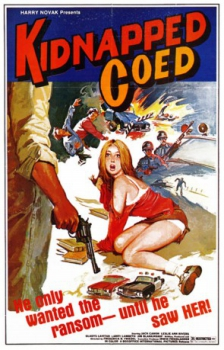

Also known as:Date with a Kidnapper (original title)
Country:United States, 76 minutes
Spoken languages:English
Genres:Crime, Drama, Romance
Director(s):Frederick R. Friedel
Writer(s):Frederick R. Friedel
Video Codec:Unknown
Number: 2862


Certification:R
Storyline:
A woman living in a boarding house is kidnapped by a small-time criminal. Soon others in the gang try to take her away from him so they can get the ransom.
Cast:

Medium: Bluray,
Comments: w/ Axe
Loaned: No
Aspect ratio: Unknown